Hvad har dubrug for?
Prøv:
Lige nu
—
Henter status …
- 07.30Konsultationen åbner
- 08.00Telefon: tid samme dag
- 08.30Telefon: alle henvendelser
- 09.45Pause og møde
- 10.15Telefon åben igen
- 11.45Telefon lukker · vagtmobil fra 12.00
- 16.00Lægevagten overtager
Din vej ind
-
01
Noget nyt, der ikke kan vente
Book Tid samme dag i Min Læge-appen. Tiderne åbner kl. 16.00 dagen før og lukker kl. 8.30. Ingen IT? Ring 8.00–8.30.
Book nu -
02
Kontrol, graviditet, barn eller attest
Det er en planlagt tid. Book online eller ring i telefontiden. Husk at bestille blodprøver en uge før, hvis det er aftalt.
Se hvad der kan forudbookes -
03
Kun medicin
Brug Min Læge eller Medicinkortet. Rød trekant-medicin, sovemedicin og stærkt beroligende kræver fremmøde.
Sådan fornyer du
Alt det praktiske
Klik for at folde ud. Eller søg foroven — det er hurtigere.
Akut sygdom
Akut i dagtid — hverdage kl. 8.00–16.00
Tid samme dag. Online booking er åben fra kl. 16.00 dagen før og frem til kl. 8.30. Du kan også ringe til klinikken kl. 8.00–8.30 for tid samme dag.
Akut opstået sygdom. Ved akut sygdom, der kræver lægelig vurdering samme dag, kan du ringe efter kl. 8.30 og tale med vores sekretariat.
Efter kl. 12.00 kan du ved uopsætteligt behov blive viderestillet til vagtmobilen. Bemærk, at den vagthavende samtidig har patienter.
Aften, nat, weekend og helligdage
Ring til Lægevagten: 70 11 07 07. Du kan ikke bestille medicin i lægevagten.
På hverdage efter kl. 16.00, i weekenden og på helligdage kan Lægevagten i Region Syd kontaktes på 70 11 07 07.
Akut skade, sår eller brud
Vi ser ikke akutte skadestueopgaver (akutte sår, brud, fald osv.), de skal i skadestuen. Ring til skadesvisitationen på 70 11 07 07 og følg anvisningerne. Vi har ikke kapacitet til skadestuearbejde.
Livsvigtigt
For akut ambulance ring: 112.
Det gælder også mistanke om blodprop i hjernen, hjertet eller lungerne. Er man i tvivl, er det ok at kontakte vagthavende læge eller lægevagten.
Akut psykiatri
Akut psykisk problemstilling hører til i akutmodtagelserne i Psykiatrien i Region Syddanmark – også selvom man ikke følges dér i forvejen. Akutmodtagelserne er et tilbud til voksne, unge og børn. De er døgnåbne, og du kan henvende dig uden henvisning fra en læge. Vi anbefaler, at du ringer først. Det sikrer dig den bedst mulige service:
Psykiatrisk Akutmodtagelse Odense
Tlf. 99 44 91 40
Afsnit P301
J.B. Winsløws Vej 22B (indgang 224)
5000 Odense C
Forgiftning, tandlægevagt og kiropraktorvagt
Ring til Giftlinjen på 82 12 12 12 døgnet rundt. Giftlinjen er en landsdækkende telefonrådgivning, hvor alle kan få direkte råd og hjælp i tilfælde af forgiftning. Sygeplejersker og læger, der er særligt uddannede inden for forgiftning, sidder klar ved telefonerne døgnet rundt.
Ved akut behov for kontakt til en tandlæge i weekenden kan du mod egenbetaling kontakte Tandlægevagten. Ved akut behov for en kiropraktor i weekenden kan du kontakte Kiropraktorvagten.
Tid og booking
Tid samme dag — sådan virker det
Vi har haft Tid samme dag siden 2017, som betyder, at man kan få vurderet sit helbredsproblem uden ventetid – uanset om det handler om en ny eller en „gammel“ problemstilling. Dermed undgår vi lange ventetider. Vi har afsat særlige tider til personer uden MitID.
Kroniske sygdomme/receptpligtig medicin følges dog hos fast team i huset, men er der akut behov for vurdering, vil vi forsøge at hjælpe med bedste mulighed og konferere eller planlægge opfølgning hos fast behandler.
- BOOK tid via MIN LÆGE APP
- TIDERNE ÅBNES kl. 16.00 dagen FØR
- Særligt sårbare/ældre uden IT kan kontakte os på telefon 8.00–8.30 på dagen
- Du har IKKE mulighed for at bestille en tid via en e-mail til lægen
- TID-SAMME-DAG-tiderne ligger jævnt fordelt over hele dagen
- KONSULTATIONEN er typisk af 15 minutters varighed, hvori er indeholdt lægens forberedelse og efterfølgende dokumentation
- BOOK den kategori, der dækker din problemstilling bedst (fx KVINDE, underliv). Og skriv i teksten, hvad det evt. er, der generer/bekymrer, og hvis du foretrækker video
- Står der KUN VIDEO, kan du ikke møde op, da vi ikke nødvendigvis har et egnet lokale
- Vi har defineret, HVILKE TILSTANDE der ses hos hvilke personalegrupper, så vi passer bedst på tiderne, og flest mulige kan blive set
- Vi forsøger at have MANGE LEDIGE TIDER hos alle ansatte i huset, så ressourcer fordeles bedst muligt. Men vi kan ikke garantere, at du kommer ind til dén behandler, du specifikt ønsker
Eksempler på Tid samme dag
- Blodprøver (+/- EKG) – KUN efter forudgående præcis aftale
- HUD fx udslæt, sår, dimser
- MAND fx urinveje, potens mv.
- KVINDE fx underlivsproblemer, prævention, celleskrab, ønsket/uønsket graviditet mfl.
- VÆGTTAB — ønske om vægttab med medicinsk behandling ved BMI over 30
- INFEKTIONER (hoste, snot, øre, øjne, urinvejsinfektioner, kønssygdomme)
- LED/MUSKEL (hofte, knæ, skulder mv.) — ryg kan oftest ses hos kiropraktor uden om os
- VIDEO VISITATION vedr. PSYKISK problemstilling
- OPFØLGNING VIDEO — kun efter aftale
- KØREKORTSATTESTER (pris 750 kr., kontant eller MobilePay)
Planlagte tider — hvad kan forudbookes
- Børneundersøgelser
- Graviditetsundersøgelser
- Rutinekontrol af kroniske sygdomme, f.eks. sukkersyge, kroniske lunge- og hjertesygdomme, osteoporose, stofskifte, ADHD, smertetilstande, angst, depression mv.
- Hér skal der oftest også bestilles tid til evt. blodprøver, EKG, urinundersøgelse mv. én uge før – det kan du selv gøre online eller på telefon
- Kontrol af tilstande der kræver receptpligtig medicin inkl. rød trekantmedicin
- Samtale om psykiske problemstillinger inkl. medicinjustering efter aftale
- Attester til kørekort hos kronikere og ældre, forsikringsselskaber og visse attester til kommunen
- Mindre operationer efter forudgående aftale med læge
- Hvis konsultationen skal arrangeres, så tolk eller pårørende kommer med
Mange konsultationer er videokonsultationer, så du kan logge på hjemmefra eller fra dit arbejde/sommerhus mv. Der kan naturligvis forekomme ventetid som i et fysisk venteværelse.
Forsinkelser og ferieperioder
FORSINKELSER: Nogle dage bliver vi forsinkede på grund af uforudset arbejde med akut syge patienter. Det kunne jo være dig, der har behov en anden gang, så vi regner med din forståelse.
I SKOLERNES FERIE har vi ikke samme høje serviceniveau, da vi afvikler vores ferie på skift. Derfor ser vi primært akutte patienter, alvorligt syge eller mistanke om alvorlig sygdom. Mulighederne for tid samme dag-booking er også begrænsede i ferierne.
Vi holder ferie med vores børn, når skolerne holder ferie. Det betyder også, at vi kun kører med lavt blus disse dage og dermed kun håndterer akutte henvendelser, herunder udredning for alvorlig sygdom.
| Vinterferien | Uge 7 |
|---|---|
| Påskeferie | De tre hverdage op til påske |
| Sommerferie | Ugerne 27+28+29+30+31+32 |
| Efterårsferien | Uge 42 |
| Juleferien | 23/12 + mellem jul og nytår + første dag i det nye år |
Medicin og recept
Receptfornyelse
- Primært ved din årskontrol og øvrige kontroller i lægehuset
- Telefonisk mellem kl. 9.00–12.00
- Via den nemme app Min Læge, som vi også bruger til mailsvar, video mv. (eller lægevejen.dk)
- Vi står til ansvar for dén medicin, der udskrives, og derfor forventer vi også, at du kommer til faste kontroller som aftalt
- Udskrivelse af rød trekant-medicin kræver fremmøde og fast plan
- Disse midler kan ej heller fornyes pr. telefon eller via mail
OBS ved vanedannende medicin: Der kræves en konsultation, dvs. fremmøde i klinikken, ved fornyelse af sovemedicin, stærkt beroligende medicin og visse former for smertestillende medicin.
Hav følgende klar: navn på medicin · styrken (dvs. antal mg) · pakningsstørrelse (antal) · dosis (hvornår på dagen du tager din medicin) · hvor medicinen ønskes leveret – hvilket apotek eller på receptserver.
Medicinen hedder ofte noget andet ved ny udlevering, idet apoteket altid udleverer det billigste præparat. Det kan give anledning til forvirring. Navnet på indholdsstoffet – det aktive i medicinen – står altid på pakningen under handelsnavnet. I enkelte tilfælde kan der være grund til at vælge et bestemt mærke, hvilket så skal anføres på recepten. Du betaler differencen til det billigste mærke.
Medicinbestillinger ekspederes løbende og normalt på 24–48 timer.
Beroligende midler og sovepiller
Sundhedsstyrelsen har besluttet, at recept på sovemedicin og angstdæmpende medicin nu kun kan fås ved konsultation. Det er derfor ikke muligt at bestille medicinen hos sekretæren eller over internettet.
Behandling med de pågældende midler kan endvidere føre til inddragelse af kørekortet samt manglende mulighed for udstedelse, fornyelse og bevarelse af kørekortet.
Sundhedsstyrelsen har ligeledes indskærpet, at beroligende midler og sovetabletter kun må udskrives for en periode på op til 2 uger. Det er derfor ikke længere muligt at få udskrevet pakninger større end 30 stk. og kun efter konsultation ved lægen.
Morfinpræparater må kun udskrives efter kontakt med læge og skal begrænses i størst muligt omfang pga. risikoen for afhængighed og påvirkning af nervesystemet.
Selvbetjening: Min Læge og Medicinkortet
Undgå at vente i telefonen vedr. service, der ikke haster.
Min Læge — af Praktiserende Lægers Organisation. Med appen Min Læge kan du nemt og via mobilen få kontakt til din egen læge.
Medicinkortet — af Sundhedsdatastyrelsen. Med denne app kan du se din aktuelle medicin. Du kan også se dine åbne recepter samt den medicin, du allerede har fået udleveret på apotek. Via appen kan du anmode din praktiserende læge om receptfornyelse på de lægemidler, der optræder som aktive. Vær opmærksom på, at appen ikke kan anvendes, hvis du har navnebeskyttelse.
Åbningstider
Telefon, konsultation og lægevagt
Lægehuset har åbent alle hverdage.
Telefon
- Telefonerne er åbne fra 8.00–8.30 for tid samme dag
- Telefonen er åben for øvrige henvendelser fra 8.30–11.45
- Dog er telefonen lukket i tidsrummet kl. 9.45–10.15 pga. pause og møde
- Fra 12.00–16.00 kan man ved akut uopsætteligt behov blive stillet om til vagtmobilen og tale med vagthavende personale. Vedkommende er ikke nødvendigvis ved en computer eller i huset
Konsultation
- Mandag til fredag: 07.30–14.00
- Onsdag har vi åbent indtil kl. 16.15
Lægevagten
- Fra 16.00 til 08.00 samt i weekenden skal man henvende sig til lægevagten ved akut behov
Hvad vi laver
Hvad laver en praktiserende læge?
Praktiserende læger er speciallæger i almen medicin, og dermed er vi uddannede til at tage os af langt de fleste helbredsproblemer. Praktiserende læger klarer selv 90 % af de problemer, folk henvender sig med.
Vi er specialister i tovholderfunktion og visitation til andre dele af sundhedsvæsnet. Hvis vi vurderer, at patientens problem ikke kan klares hos os, kan vi henvise videre.
Vi kan henvise til en anden type praktiserende speciallæge, f.eks. kirurg eller gynækolog. Konsultation hos speciallæge er ved henvisning fra os gratis for gruppe 1-medlemmer af sygesikringen. Gruppe 2-medlemmer betaler et honorar til speciallægen.
Vi kan henvise til hospital, enten til undersøgelse og behandling i et ambulatorium eller til akut eller planlagt indlæggelse. Undersøgelse og behandling på offentligt hospital er gratis for alle med dansk sygesikringskort.
Vi er uddannede specialister i de almindelige kroniske sygdomme (diabetes, KOL, højt blodtryk, depression, astma mv.), som vi kontrollerer i Lægehuset. Kun i komplicerede tilfælde er det nødvendigt med henvisning til specialafdeling. Vores ansatte er uddannet til at varetage de opgaver, som forekommer i Lægehuset.
Kroniske sygdomme og årskontroller
Lider du af en eller flere af følgende sygdomme, så ring og få aftalt en tid til årskontrol: sukkersyge (diabetes), forhøjet blodtryk (hypertension), hjertesygdom i øvrigt som fx hjertesvigt el. atrieflimren, astma eller KOL (rygerlunger), knogleskørhed (osteoporose), depression, angst.
Oftest vil du få en tid hos vores sygeplejerske eller laborant til blodprøver, EKG og evt. urinprøve samt snak om kost, risikofaktorer mv. 1 uge senere kommer du til årskontrol hos lægen, som giver dig svar på blodprøverne og vurderer konsekvensen af disse.
Patienter med kroniske sygdomme kommer til faste årskontroller. Det er en forudsætning for receptfornyelse. Hvor hyppigt afhænger af den enkeltes situation.
Ved årskontrollen gennemgås svar på blodprøver og evt. EKG, og vi vurderer din aktuelle medicin. Får du mere end 3 præparater, må du gerne medbringe din medicin – og altid astma-/KOL-medicin pga. kontrol af teknikker mv.
Har du andre ting, der ikke vedrører din årskontrol, skal du i stedet bestille tid samme dag, så vi har tid til at gennemgå din kroniske sygdom og forebygge forværring.
Kvinder og børn: graviditet, børneundersøgelser, smear, p-piller
Der er særlige aftaler med Sygesikringen vedr. forebyggende konsultationer hos kvinder og børn.
Graviditet. Som gravid tilbydes du tæt kontrol i Lægehuset Ferritslev. Der tilbydes som standard 4 lægeundersøgelser under en graviditet/fødsel, men flere kan være nødvendige. Husk urinprøve til alle graviditetsundersøgelser.
Børneundersøgelser. I barnets første leveår tilbydes der børneundersøgelse hos den praktiserende læge ved 5 ugers alder, ved 5 måneder og igen, når barnet fylder 1 år. Frem til det fyldte 5. år ses barnet til børneundersøgelse en gang årligt, typisk omkring det tidspunkt, hvor barnet fylder år.
Celleskrab / smear. En celleprøve fra livmoderhalsen, også kaldet smear, tages for at opdage eventuelle forstadier til livmoderhalskræft. Vi har uddannet vores personale til at varetage denne opgave. Kvinder fra 23–50 år tilbydes smear-undersøgelse hvert 3. år, kvinder i alderen 51–65 år hvert femte år.
P-piller. Ved ønske om p-piller bestilles tid hos vores sygeplejerske. Husk 3 måneders kontrol efter opstart, hvor du får målt dit blodtryk.
Sygeplejerskeopgaver og laboratorium
Visse opgaver er det kun sygeplejerskerne, der udfører. De er bedst til det, og så frigiver det lægerne til andre komplekse opgaver: sår, trådfjernelse, øreskylning, urinprøver og meget andet.
Laboratoriet. Planlagte blodprøver samt blodtryksmåling foretages mandag til fredag mellem kl. 8.00–14.00. Lægehuset har et laboratorium, og der hentes desuden blodprøver 2 gange dagligt via transportservice fra sygehusene. Det er ikke muligt selv at beslutte, hvilke blodprøver der skal tages, da det er en lægefaglig vurdering, så blodprøver skal være aftalt med lægen.
Vær opmærksom på, at det er dit ansvar at få svar på undersøgelsen. Du kan vælge at få svaret tilsendt via sikker mail eller aftale en ringe-tilbage-tid fra os.
Rejsevaccination er ikke en del af det gratis sundhedsvæsen i Danmark og tilbydes ikke i lægehuset – kontakt i stedet en vaccinationsklinik.
Henvisninger
Langt de fleste sundhedsproblemer kan løses lokalt hos din praktiserende læge. Hvis vi vurderer, at dit problem er bedre løst hos en speciallæge eller et hospital, henviser vi dig dertil. Derved sørger vi for, at speciallæger og hospitaler bruges til det, de er bedst til, og samtidig undgår vi, at sundhedsudgifterne og ventelisterne stiger yderligere.
Som gruppe 1-patient kan du som udgangspunkt ikke „bede om en henvisning“ til en speciallæge eller et hospital. Det er noget, lægen afgør, og det er et krav, at du er undersøgt først. Det kan derfor heller ikke foregå via telefonen eller via personalet. Det samme er gældende for henvisninger til fysioterapeuter og psykolog. Fornyelse af henvisning kan ligeledes kun foregå ved en konsultation.
Hvis du ønsker direkte adgang til speciallæger, bør du tilmelde dig hos kommunen som gruppe 2-patient, men så er der en egenbetaling både her og hos speciallægen.
Psykolog og tilskud
Du kan kun få tilskud til psykologhjælp, hvis du har en henvisning fra din læge. Der kan efter henvisning ydes tilskud, hvis du opfylder et af nedenstående kriterier:
- røveri-, volds- og voldtægtsofre
- trafik- og ulykkesofre
- pårørende til alvorligt psykisk syge personer
- personer ramt af en alvorligt invaliderende sygdom
- pårørende til personer, der er ramt af en alvorligt invaliderende sygdom
- pårørende ved dødsfald
- personer, der har forsøgt selvmord
- kvinder, der får foretaget provokeret abort efter 12. graviditetsuge
- personer, der inden det fyldte 18. år har været ofre for incest eller andre seksuelle overgreb
- personer, der har en let til moderat depression og på henvisningstidspunktet er fyldt 18 år
- personer, der lider af let til moderat angst/let til moderat OCD (fra 18 år)
Tilskuddet udgør 60 % af psykologens honorar. Der kan højst ydes tilskud til 12 konsultationer. Personer, som behandles for depression eller angst, kan dog genhenvises, således at tilskud ydes for op til 24 konsultationer i alt.
Mange forsikringer dækker hjælp til psykolog, hvis det er indiceret.
Priser
Priser på attester og vacciner
Tidsbestilling til attester aftales via fast læge fraset kørekortattest, som kan bookes på forhånd eller ved tid samme dag. Kommunale attester eller forsikringsattester betales af disse.
| Private attester | Pris |
|---|---|
| Sygemelding – ansat | 1000 kr. (momsfritaget) |
| Sygemelding – studerende | 300 kr. (momsfritaget) |
| Kørekortsattest (inkl. diabetes og chauffør) | 750 kr. inkl. moms |
| Privat konsultation | 500 kr. (momsfritaget) |
| Pensions- og forsikringsattester | Aftales med forsikringsselskabet |
| Rejsevacciner | Tilbydes ikke i lægehuset – kontakt i stedet en vaccinationsklinik |
Kørekortsattest — hvad skal du huske?
Vi udarbejder kørekortsattester for de patienter, der er tilmeldt Lægehuset Ferritslev eller kommer jævnligt (gruppe 2-patienter). Når du har bestilt en tid, skal du huske følgende:
- Et vellignende og opdateret foto
- 500 kr. eller MobilePay (vi tager ikke betalingskort). Dog 750 kr. ved erhvervskørekort til personbefordring
- Mød op 5-10 minutter før, så du kan udfylde side 1 i attesten – udleveres hos sekretæren
- Briller, hvis sådanne anvendes ved bilkørsel
- Bruger du kontaktlinser, så husk, at synsprøven skal udføres både med og uden linser
Er du over 70 år, skal du ikke længere have kørekortet fornyet hos lægen, men i stedet hos borgerservice. Har du en kronisk sygdom, vil de bede dig tage kontakt til Lægehuset om en tid til motorattest.
Har du diabetes, udfylder vi en ekstra attest vedr. dette. Så husk at oplyse dette ved tidsbestilling.
Praktisk
Elektronisk patientjournal
Næsten alle journaloplysninger føres elektronisk og kan kun ses af læger og personalet i lægehuset. Via vort elektroniske patientjournalsystem sender vi dagligt henvisninger og recepter. Vi modtager udskrivningsbreve og prøvesvar fra lægevagten, hospitaler og speciallæger.
Vi modtager også elektroniske patientjournaler på nye patienter, hvis du har bedt din tidligere læge om at sende journalen til os. Tidligere læge får ikke oplysninger om, hvilken læge man har skiftet til, så det er vigtigt, at du giver besked om, hvem du tidligere har haft som læge.
Hvis du ikke har modtaget indkaldelse til en undersøgelse/behandling på sygehuset inden 2 uger, bedes du kontakte os, da der ind imellem forekommer svigt i den elektroniske kommunikation.
Sundhedsforsikring
Det er lægen, der vurderer, om der er lægelig indikation for, at en patient bør have udstedt en lægehenvisning. Det gælder, uanset om patienten har en sundhedsforsikring eller ej.
Udstedelse af en lægehenvisning udløser ikke særskilt honorar, men er omfattet af det almindelige konsultationshonorar. Hvis du ønsker at gøre brug af din sundhedsforsikring, får du en kopi af henvisningen. Der opkræves ikke særskilt honorar fra dig.
Hvis der ikke er udstedt henvisning, eller forsikringsselskabet ønsker yderligere dokumentation, bruges Sundhedsforsikrings-attest FP 710. Anmodningen om attestudstedelse skal komme fra forsikringsselskabet skriftligt eller pr. mail.
Tolkebistand
Hvis lægen eller patienten skønner, at der er behov for tolkebistand, er dette muligt. Vi samarbejder med tolke, der er tilknyttet Tolkekontoret. Disse tider tilpasses efter, hvornår tolken står til rådighed.
Det er klinikken, der i så fald rekvirerer tolken via Tolkekontoret, og der sendes brev til dig, der behøver tolken, med oplysning om tidspunkt for fremmøde.
Vi ser ikke gerne afbud til aftaler med arrangeret tolk, og slet ikke udeblivelser. Det er meget uheldigt, hvis tolken møder forgæves.
Privatlivspolitik for patienter
I forbindelse med Lægehuset Ferritslevs undersøgelse, diagnostik og behandling af dig som patient indsamler og behandler Lægehuset Ferritslev som dataansvarlig en række personoplysninger om dig. Dette er vi forpligtet til efter autorisationslovens kap. 6 og journalføringsbekendtgørelsen.
Udarbejdet af Praktiserende Lægers Organisation i samarbejde med advokatfirmaet Bruun og Hjejle.
Hvem er vi
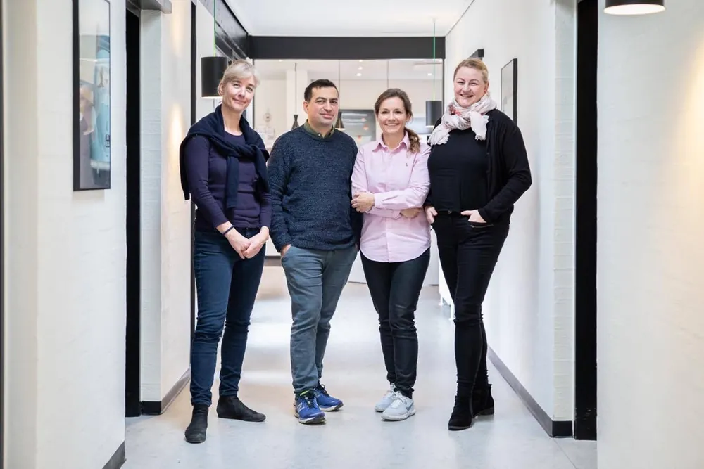
Lægehuset Ferritslev Fyn ligger i skønne landlige omgivelser beliggende mellem Odense og Nyborg, lige syd for Langeskov. De fire ejere er alle speciallæger i almen medicin og købte Lægehuset Ferritslev Fyn i 2014.
Vi har travlt i det danske sundhedsvæsen og skal holde i mange år. Derfor har vi ansat læger til at aflaste os nogle dage om ugen: Helena Thell, Rikke Bak Toft Andreasen og Nicolai Soll, der alle er speciallæger i almen medicin.
Vi deltager i videreuddannelsen af læger i Region Syd og har fast en uddannelseslæge i Lægehuset af 6-15 måneders varighed. De er alle læger, men på forskellige niveauer i deres specialisering.
Herudover har vi vores fantastiske personale: Fire sygeplejersker — Anita (der også er praksismanager), Gitte, Helle og Lotte — og vores farmakonom Maria samt en dejlig flok medicinstuderende, der hjælper som praksisassistenter.
Vi arbejder efter princippet „Tid samme dag“ og har online booking via Min Læge-appen. Kun kontrol af kronisk sygdom, planlagte børne- og graviditetsundersøgelser samt attester kan få planlagte tider. Det sikrer, at vi ikke har lang ventetid.
Du kan også følge os på Facebook. Hér kommer vi med hyppige, relevante opdateringer. Vi glæder os til at se dig.
Lægerne
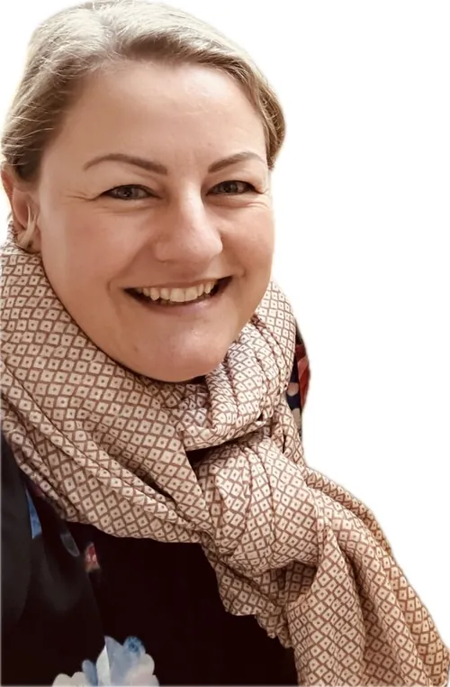
Dorte Høj DrostrupSpeciallæge i almen medicin, ejerMan · tirs · ons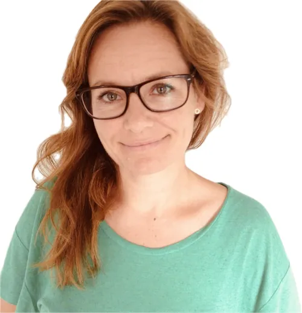
Dorte Oxholm OlsenSpeciallæge i almen medicin, ejerTirs · ons · tors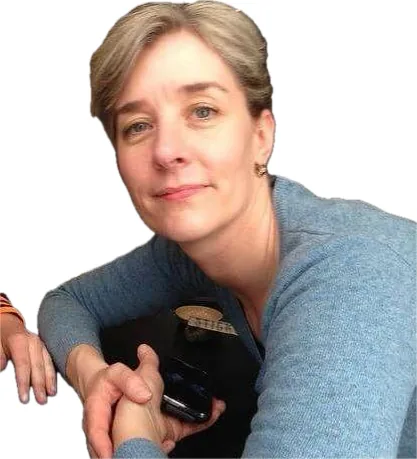
Lone Lund ThomsenSpeciallæge i almen medicin, ejerOns · tors · fre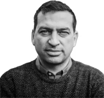
Michael Skov HejmadiSpeciallæge i almen medicin, ejerMan · ons · fre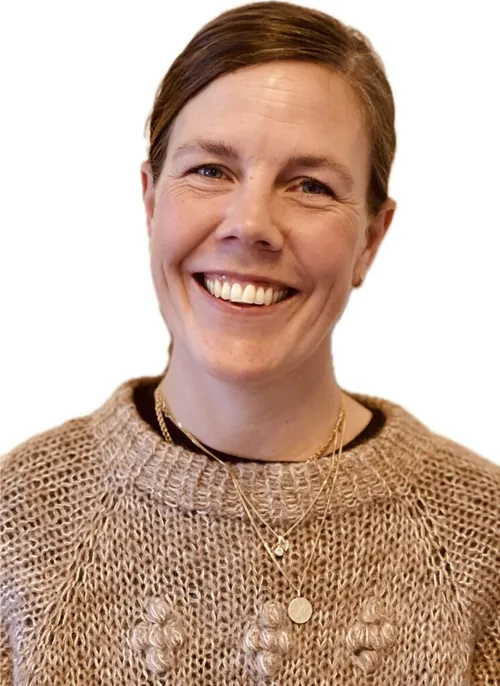
Helena ThellSpeciallæge, fastansat lægeMan · tirs · ons · fre- Nicolai Soll OseiSpeciallæge, fastansat lægevikarTirs · tors
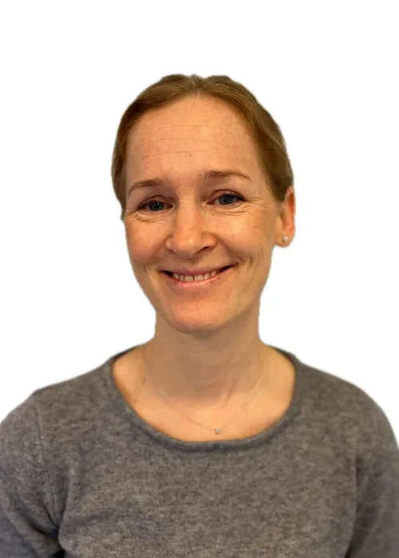
Rikke Toft Bak AndreasenSpeciallæge, fastansat lægevikarTirs · ons · tors · fre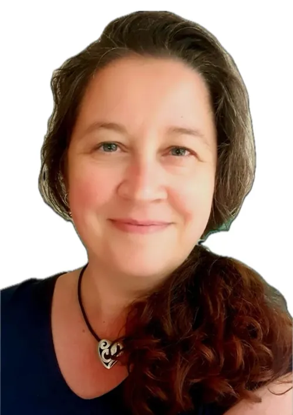
Celia MøllenborgHoveduddannelseslægeAlle ugens dage
Sygeplejersker og farmakonom
De er specialuddannet til at arbejde i et lægehus og bliver superviseret flere gange dagligt, så de tager sig af mange komplekse problemstillinger. Alle uddannes i alle kroniske sygdomme, men de er hver især specialiseret i bestemte sygdomme.
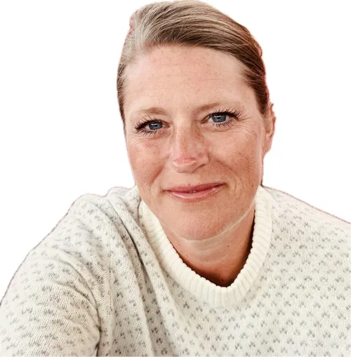
Anita Skov HejmadiPraksismanager og sygeplejerskeAnsat siden 2006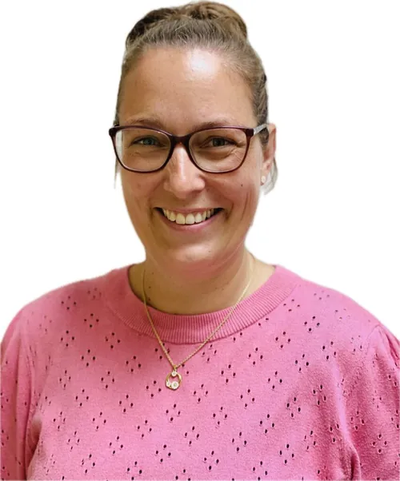
Gitte Klüver NielsenSygeplejerskeKOL og astma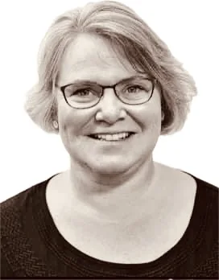
Helle Mørk BerthelsenSygeplejerskeDiabetes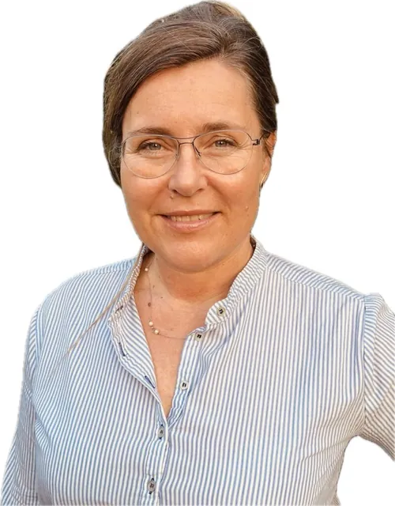
Lotte Hammer EgelundSygeplejerskePalliation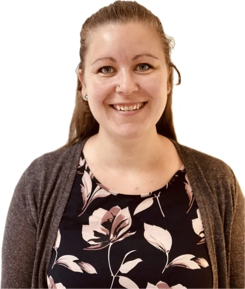
Maria Ahler JørgensenFarmakonomRecepter og dosisdispensering
Praksisassistenter
Primært lægestuderende på Syddansk Universitet Odense. De hjælper os med bl.a. laboratoriefunktioner (EKG, blodprøver, urinprøver mv.) og forskellige superviserede konsultationer alt efter niveau.
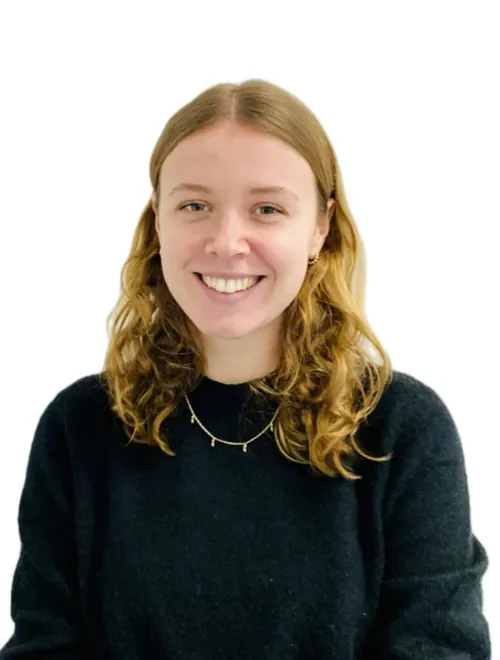
Anna Mørch Munch ChristensenMedicin, SDU siden feb. 2023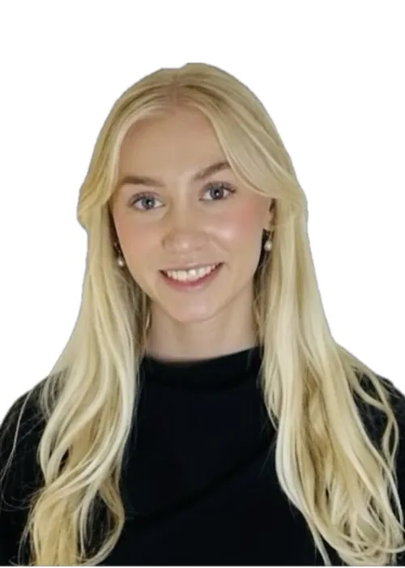
Cecilie Schou HansenMedicin, SDU siden feb. 2024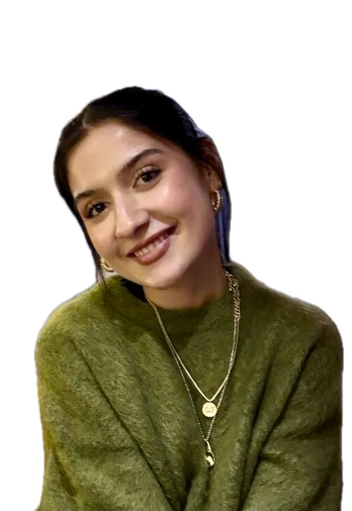
Hella Saadi TekritiMedicin, SDU siden feb. 2023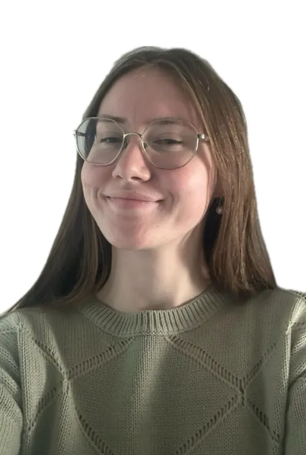
Rebekka Marensgaard PedersenMedicin, SDU siden feb. 2024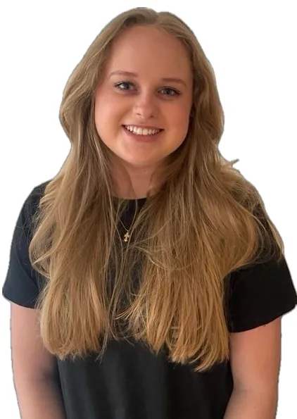
Annika Skov VanggaardStudentermedhjælper
Øvrige du kan møde i huset
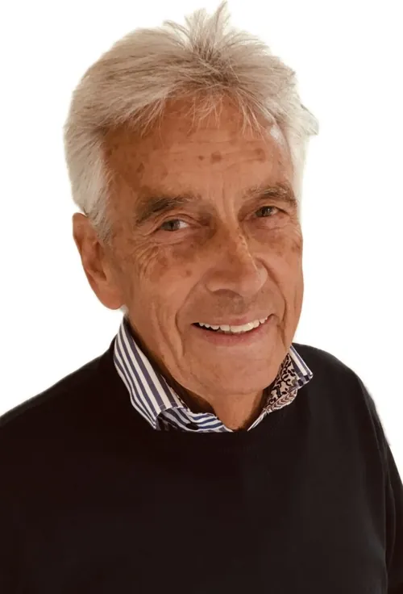
Poul Erik KristensenHus-arkitekt og teknisk konsulent
Vi har aktuelt 2 ansatte til at gøre rent i lægehuset. De er i huset, når der ikke er patienter. Alle har naturligvis tavshedspligt som alle andre ansatte i Lægehuset Ferritslev.
Kontakt
Lægehuset Ferritslev
Ørbækvej 871 B
5863 Ferritslev
Patienter skal skrive via krypteret mail via „Min Læge“-appen eller www.lægevejen.dk. Vær opmærksom på, at man i e-mail ikke bør sende cpr-numre og lignende. Børn skal oprettes under eget cpr-nr., men med en forælders mail. Skriv i barnets navn pga. jura.
- Fax
- 65 98 16 90
- Offentlig ukrypteret mail
- mail@65981002.dk
- Hjemmeside
- www.LaegehusetFerritslev.dk
- /laegehusetferritslev
- Ydernr.
- 04 27 81
- CVR
- 35 69 63 26
- Lokationsnummer
- 5790002012341